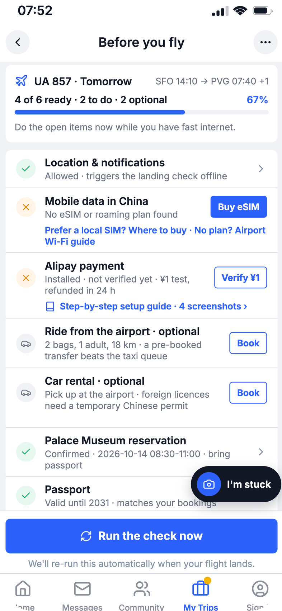
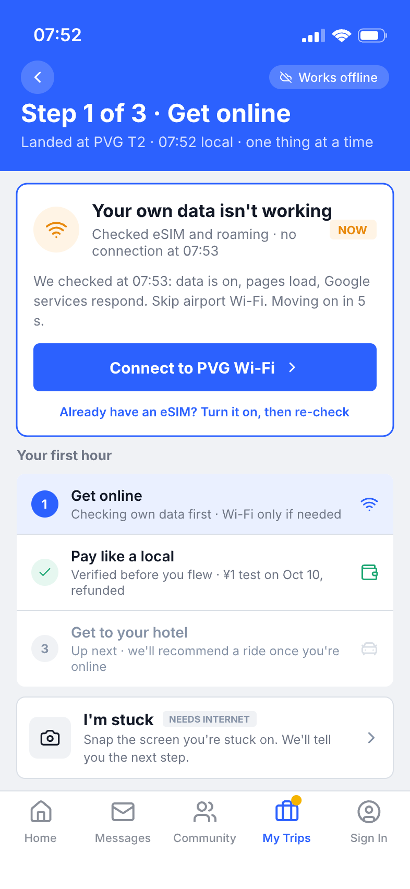
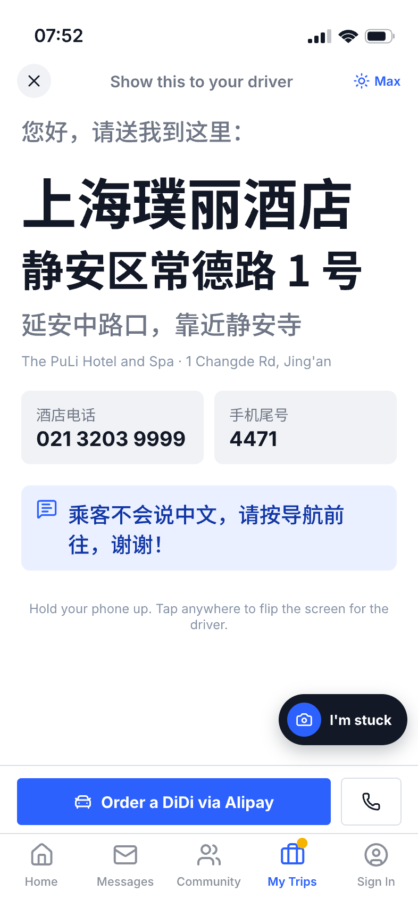

前端与原型
HTML、CSS、JavaScript 构建交互界面。appearance.pen 经 pen.dev 导出，由 Python 脚本组装为 H5；后端不可用时可体验静态流程。
机票和酒店已经订好，接下来还要确认手机能否上网、支付应用怎么用，以及如何从机场到酒店。Landing Check 希望把这些准备和操作放进 Trip.com，在游客需要时，告诉他接下来可以怎么做。



在公开旅行社区里，我们看到一些游客已经查过攻略、装好应用，甚至完成了绑卡，却仍然担心到了中国不能付款。也有人在落地后才发现，自己不知道怎样完成买水这样简单的一笔消费。这些具体的提问让我们开始关注：游客做过准备之后，怎样才能在现场把工具用起来？
卡片标题为公开原帖的释义。点击查看具体情境、已知后续与原始来源。
因此，我们把目标用户收窄为首次来华、能够自己安排机票和酒店的外国自由行游客。他们通常愿意做准备，需要的是知道自己的设备和账户适用哪种办法，以及出问题后还能怎么办。我们选择从起飞前到离开机场这一段开始，把上网、支付和去酒店的步骤放到同一个行程里。
这个选择也有边界。社区里的求助说明问题确实存在，但不能告诉我们有多少游客会遇到，也不能证明一套连续引导一定比攻略更好。“第一小时”只是我们用来控制产品范围的说法，实际是否能减少摸索，还需要让目标用户完成具体任务来比较。
Landing Check 被设计为 Trip.com 内的一项功能。我们希望利用用户已有的航班和酒店信息，在起飞前提醒他确认准备情况，落地后再按当前需要给出联网、支付和交通指引。下面的 H5 原型展示了这条流程；点击不同阶段，可以查看具体页面和操作方式。
行前检查里，支付宝和 TenPayGo 放在同一个“境内支付”板块。用户选择一种方式完成小额测试后，这项任务就显示为已完成，另一种可以作为备用；如果测试失败，页面会解释对应错误，并提供切换方式的入口。当前测试使用模拟交易，正式使用前仍需确认支付渠道、退款和结果回调是否能够接入。
支付任务完成后，交通页还会检查具体方案需要什么。例如，支付宝里的滴滴不能通过 TenPayGo 叫车，所以只验证了 TenPayGo 时，页面会提醒用户准备支付宝，或者选择可以付现金的交通方式。我们希望这些条件直接出现在需要做决定的地方。
当前在线原型包含支付宝与 TenPayGo，支付验证、航班与行程使用模拟数据。动画说明产品思路，具体操作以在线原型为准；正式 App 集成、真实扣款和自动推送尚未接入。界面截图保留原型中的英文。
H5 前端承载任务和教程，Python 后端负责规则、识别与知识库。
HTML、CSS、JavaScript 构建交互界面。appearance.pen 经 pen.dev 导出，由 Python 脚本组装为 H5；后端不可用时可体验静态流程。
Python + FastAPI 提供接口，Uvicorn 运行服务，Pydantic 校验数据，HTTPX 调用模型。行前检查和交通推荐采用规则计算。
DeepSeek（deepseek-flash）匹配截图或文字中的问题，再从知识库读取步骤。不确定时提供候选，模型不可用时回退到关键词规则；库外建议标注为未经核验。
JSON 维护 5 类场景、41 条记录，保存步骤、备用办法、来源和核验日期。Python 脚本校验内容并导出图文教程。
pytest + Playwright 检查接口和完整流程。GitHub Pages 托管展示页与 H5，Render 运行后端，模型密钥保留在服务端。